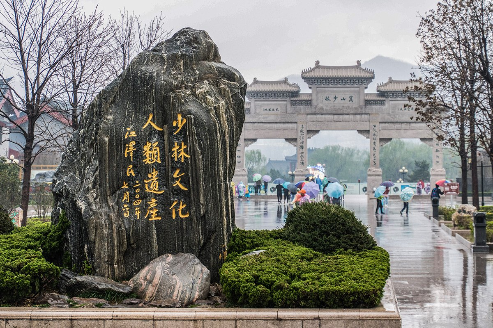

中岳嵩山·少林寺
嵩山少林景区是世界著名的旅游胜地，人文景观丰富，主要有“天下第一名刹”之称的禅宗祖庭和少林武术发祥地的少林寺，有中国现存规模大、数量多的塔林，还有中国现存最早的石阙少室阙以及达摩洞、初祖庵、二祖庵、十方禅院、甘露台等景观；自然景观则集中于少室山三皇寨，代表景观有猴子观天、云峰虎啸、御寨落日、少室秋色等40余处。
焦作(云台山－神农山－青天河)风景区
焦作(云台山－神农山－青天河)风景区包含云台山、青天河、神农山三个风景区，其中，云台山风景区是一处以太行山岳水景为特色，以峡谷类地质地貌景观和历史文化为内涵，集科学价值和美学价值于一身的科普生态旅游景区；青天河风景名胜区集江南水乡与北国田园风光于一体，素有“北方三峡”之荣和“豫北小桂林”之誉；神农山风景区是儒道佛文化名山，是道教创始人老子筑炉炼丹、成道仙升之所。
龙门石窟
龙门石窟开凿于北魏孝文帝年间，之后历经东魏、隋、唐、宋等朝代，连续大规模营造达400余年之久，今存有窟龛2345个，造像10万余尊，碑刻题记2800余品。其中“龙门二十品”是书法魏碑精华，褚遂良所书的“伊阙佛龛之碑”则是初唐楷书艺术的典范。龙门石窟是世界上造像多、规模大的石刻艺术宝库，被联合国科教文组织评为“中国石刻艺术的最高峰”，与敦煌莫高窟、云冈石窟并称中国三大石窟。